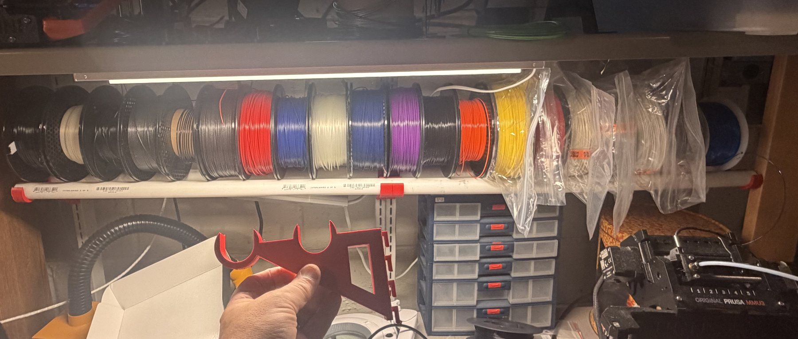
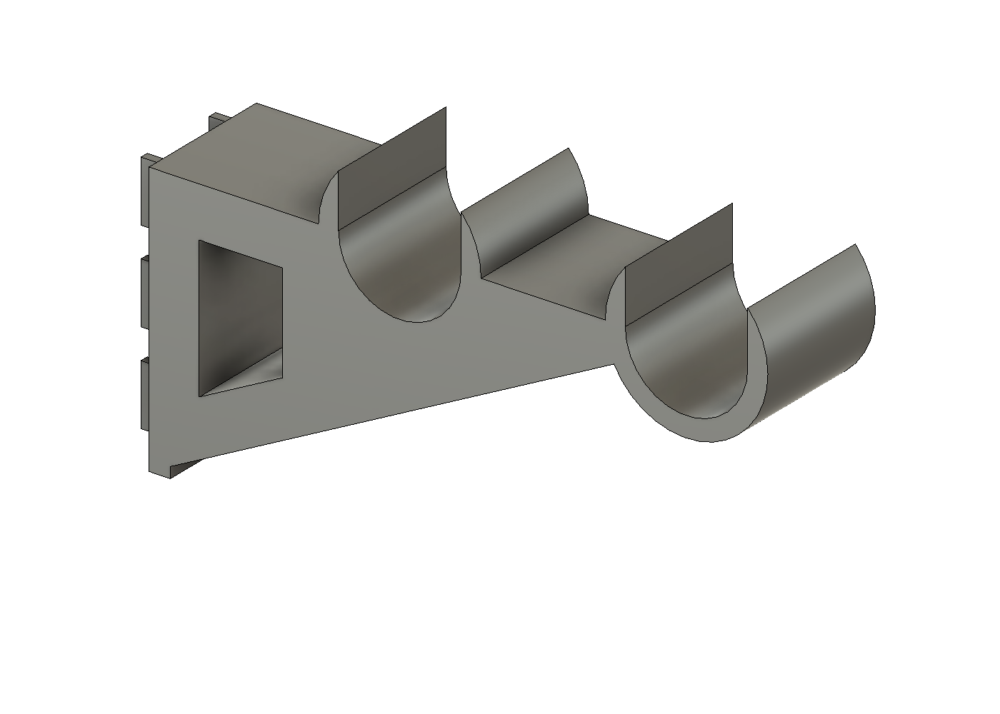
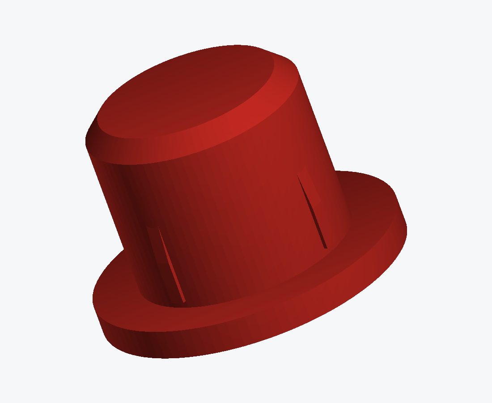
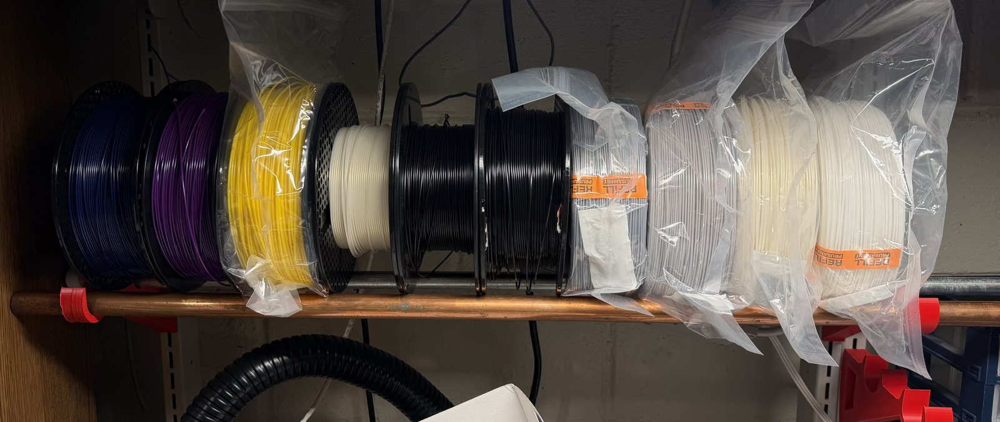
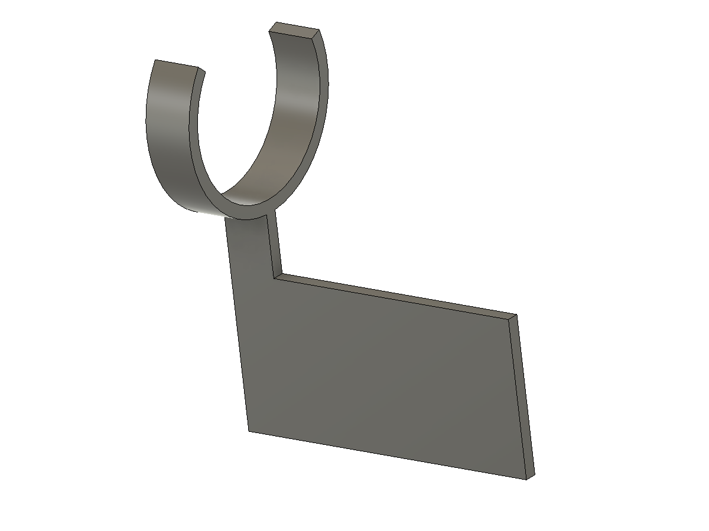

Filament everywhere. So it hangs off the old Ergotron.
3D printed brackets that hook into the slotted uprights of an Ergotron LAN Organizer 3000 and cradle spools on two rods. No drilling, no hardware, nothing permanent. Free files, MIT licensed.

Drag to spin, scroll to zoom. Red parts are the printed ones. One level: two brackets, two rods, four end caps, a label clip.
Why this exists
Filament was living in a heap. Bags on the bench, spools stacked on their sides under the printers, and the one I wanted always at the bottom of the pile. Meanwhile I had an Ergotron LAN Organizer 3000 holding up the printers — a 2004-vintage steel desk frame with punched slots up every upright, which is exactly the kind of mounting surface you would design for this if you were starting from scratch.
The frame is discontinued, and the order guide that survives it (Ergotron 870-03-006) has frame widths and weight capacities but no slot dimensions at all, so the whole project starts with a ruler.
How it works
Two brackets hook into one upright each, and two rods span between them. Spools rest in the valley between the rods rather than threading onto a single pole. That was not the first design — the first one was a single rod you hang spools on, and it took about ten seconds of thinking about daily use to kill it, because every spool change means pulling the pole and sliding everything off the end.
With two rods you lift a spool straight up and out, and drop the next one in. Nothing else moves. A spool sitting in the cradle also rolls freely, so it feeds without fighting.


Rod axes sit 70 mm and 150 mm out from the upright face. That spacing is not arbitrary: a 200 mm spool resting on both rods sits at about a 20 degree contact angle, which is deep enough that it will not wander and shallow enough to lift out one-handed. It also puts the back of the spool about 10 mm off the upright, which is the clearance the pegboard version later reuses as a backstop.
Nothing retains the rods vertically, because nothing ever pulls them up. Spools press them down into the saddles. Sideways is a different story, which is what the end caps are for: a stem that grips the pipe bore and a flange wider than the pipe, so a rod cannot walk out of its saddle while you shove spools around.
What the ruler got wrong
Every dimension that came from a measurement was right. Every dimension that came from a spec sheet was wrong.
The slots measured 3/4 inch tall on 1 inch pitch, and that held. The face metal I guessed at 2 mm from a photo, and the first printed gauge — a hook plate with no bracket attached to it, twenty minutes of plastic — slid into the slots, dropped a few millimetres and jammed. Paint and the burr a punched slot leaves on its inside edge are worth another millimetre that no drawing tells you about. The throat went from 2.8 to 3.8 mm, the lips got lead-in chamfers, and the second gauge seated properly.
Then the pipe. Schedule 40 one-inch PVC has a published bore of 26.6 mm. The actual pipe measured 30. The first set of end caps were scrap by 4 mm, which is a lot of millimetres to be wrong by when the number is printed in a table.
The third one was mine: the caps were made too snug to start. The fix was not a bigger chamfer but a different rib shape — each of the four crush ribs now starts flush with the stem at the tip and only rises to full height over the last 6 mm, so the cap slides in loose, centres itself, and grips just as the flange lands.

Rods: what to use
Rod strength is never the limit here — PVC runs at about 2 MPa of a 50 MPa allowable. Stiffness is, because sagging rods make a shallow valley and spools drift toward the middle of it. Sag below is per rod at full load, about 5.6 kg each over a 711 mm span.
| Rod | Sag | Drops into the stock saddle? | Cost per level |
|---|---|---|---|
| 1" sch 40 PVC default | ~2.4 mm, creeping to 4–6 | yes | ~$5 |
| 1" sch 40 aluminium pipe | ~0.1 mm | yes — same 33.4 mm OD | ~$32 |
| 1¼" hardwood dowel | ~0.4 mm | 2.5 mm of play, fine | ~$10 |
| ¾" EMT conduit | ~0.25 mm | no — one parameter change | ~$5 |
Start with PVC. It is fine, and the open saddles mean you can swap rods later without reprinting anything. If the spools bunching toward the middle ever annoys you, aluminium pipe has the identical outside diameter and drops straight in; EMT is stiffer per dollar than anything else but wants the saddle pocket rebuilt, which is one constant and a re-run.
One level holds about 12 kg — a full row of nine 1 kg spools, with roughly a 2× margin on the brackets.
The small parts

The label clip is a C that snaps onto a rod from below. Its mouth spans 140 degrees at the top, which sounds like a lot until you notice the spool touches the rod only about 23 degrees off vertical — right in the middle of that opening. So the clip wraps the bottom of the rod, where nothing else is happening, and the spool never touches it.
There are two test coupons in the repo, and printing them is the whole reason this went together in two evenings instead of a week. The slot gauge is the hook plate on its own. The saddle coupon is an 8 mm slice of the arm with both rod pockets. Between them they test every dimension that a spec sheet could lie about, for about 20 g of plastic, before you commit four hours to a bracket.
Printing
Brackets lie on their side, so the layer planes line up with the load and no seam crosses a hook lip. ASA if your printer is enclosed, PETG otherwise — both resist the slow creep that would let a loaded hook sag over months, which is what rules out PLA here. Four or more perimeters, 40% infill, and supports on the build plate only, under the hook blades.
One warning that cost me a print: ASA wants a smooth PEI sheet, not a textured one, and it wants that sheet washed with dish soap. Isopropyl alone left enough oil behind to turn a plate of end caps into spaghetti; soap and hot water fixed it on the next attempt.
| Part | Per level | Material | Time |
|---|---|---|---|
| Spool cradle bracket | 2 | ~90 g each | ~3h 50m each |
| Rod end cap | 4 | ~33 g total | ~1h 30m |
| Rod label clip | one per spool | ~6.5 g each | ~50m each |
| Slot gauge + saddle coupon | once, first | ~23 g total | ~1h |
Everything is a script
No part of this was drawn by hand. Each one is a Python script driving Fusion 360 over its local MCP server: the script builds the geometry, probes it numerically — is the rod pocket actually empty, is there really no hook where there should not be one — and refuses to export if any probe misses. Then it writes the STL, STEP and F3D in the same run, so they cannot drift apart, and saves a new version of the Fusion document with the dimensions in the description.
That is also why the fixes above were cheap. Changing the throat that jammed was one constant and a re-run, and every downstream file moved with it.
Get the files
Everything is in the repo, MIT licensed.
- STLs for every part, verified watertight against the CAD volume
- STEP and Fusion archives if you want to change things
- The build scripts, with every dimension at the top of one file per part
- A sibling project, lan-pegboard-mount, that hangs pegboard on the same uprights and doubles as a backstop behind the spools
If your frame is not this frame
The hook geometry is the only part that cares. It is four numbers at the top of scripts/build_rod_bracket.py — slot pitch, slot width, face metal thickness, and the throat clearance derived from it — and the slot gauge exists to tell you what yours actually are. Any slotted upright on a regular pitch is fair game.